Any Countdown — every wait, worth watching.
Describe what you're waiting for. We work out the date, design the widget, and put it on your home screen.
Describe it, AI makes it
Just say it.
We design it.
“Dune Part Three” is all it takes. We find the release date, pick the palette, and hand you a finished widget.
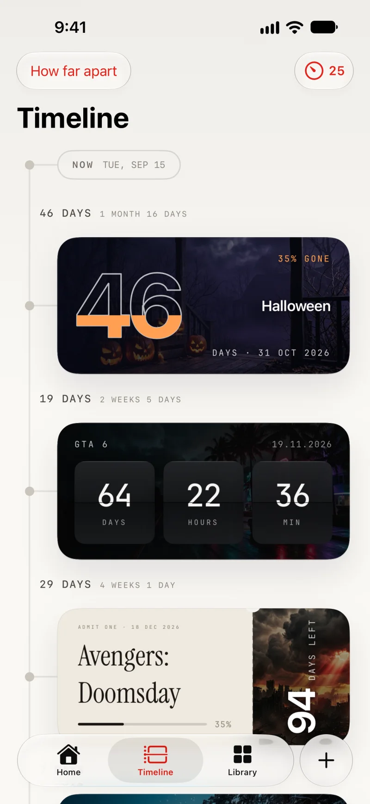
The gallery
Made by others,
yours in a tap.
Browse what the community is counting down to. Add any of it to your own home screen instantly.
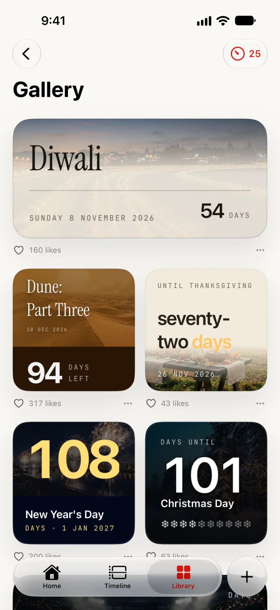
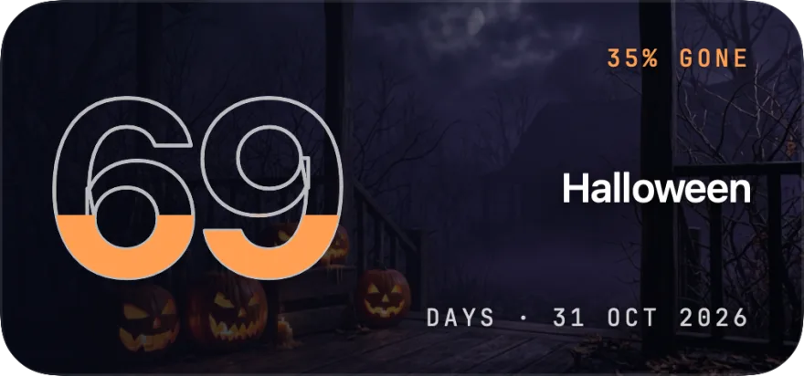
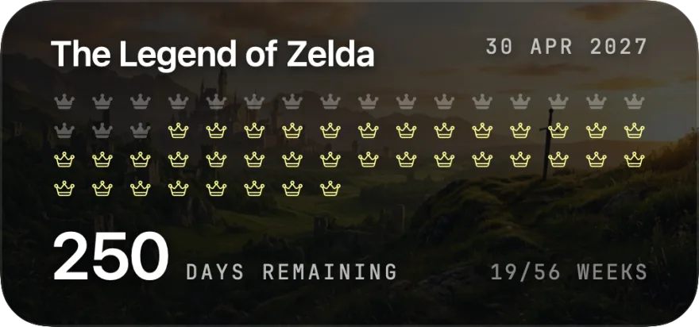
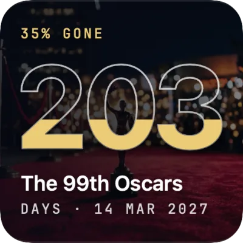
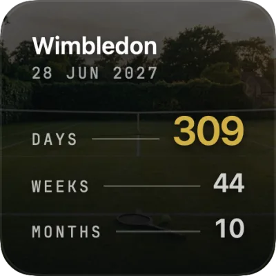
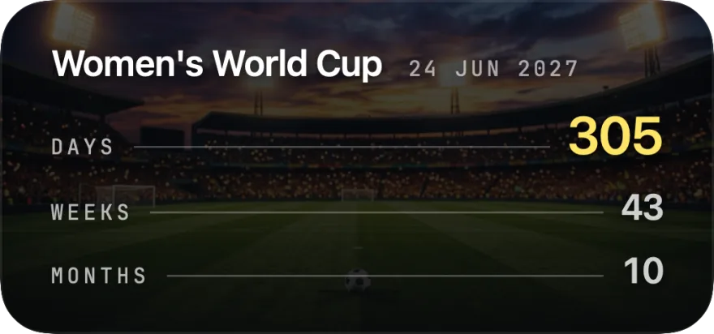
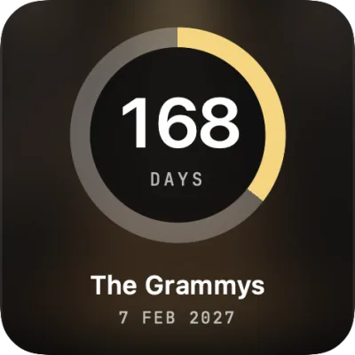
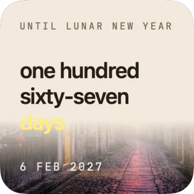
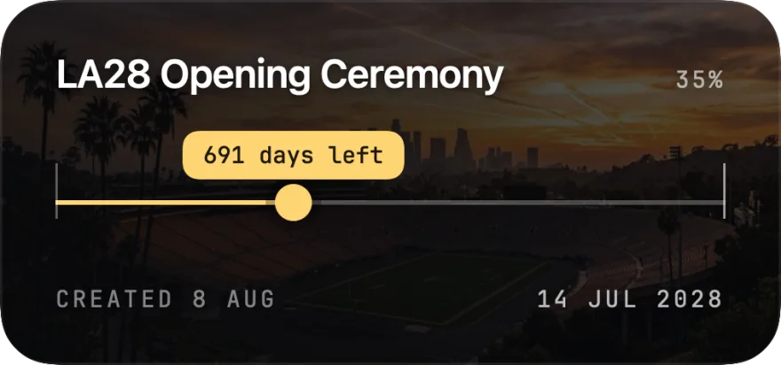
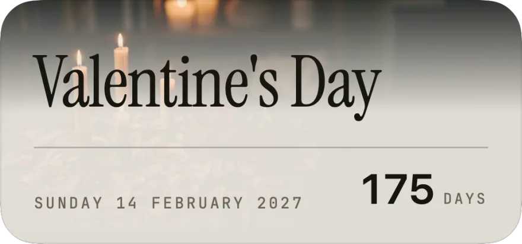
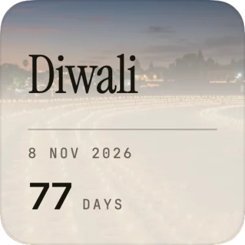
30+ designs
Widgets worth
a home screen.
Everywhere
On every
screen
you own.
Your countdowns sync everywhere, and each one is designed for the screen it lands on.
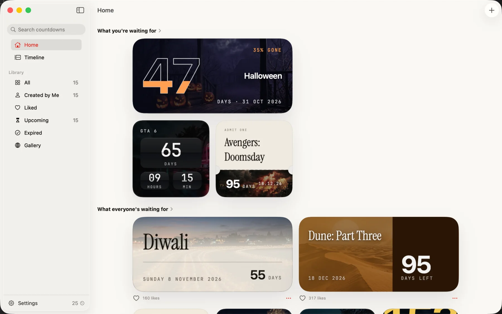
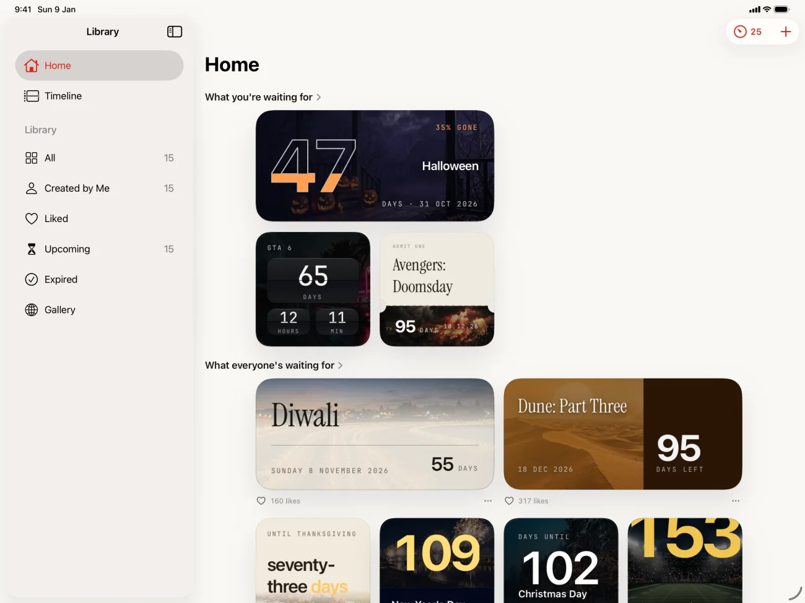
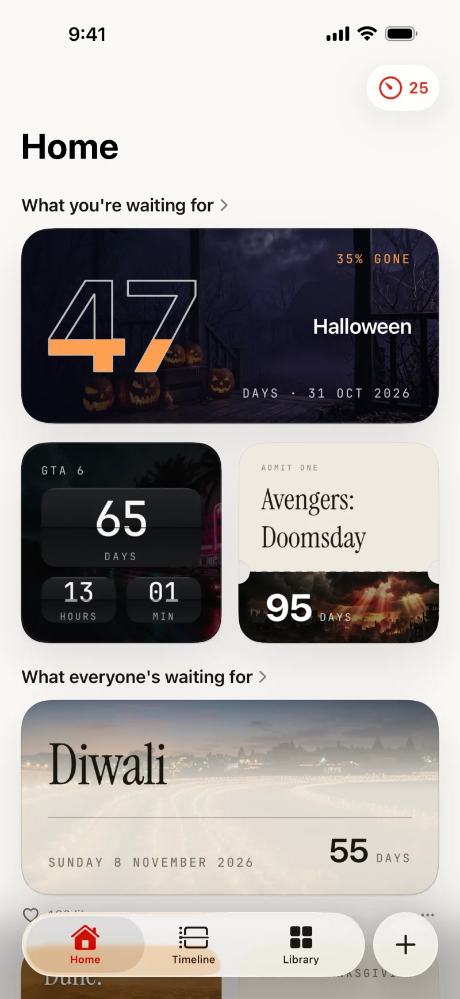